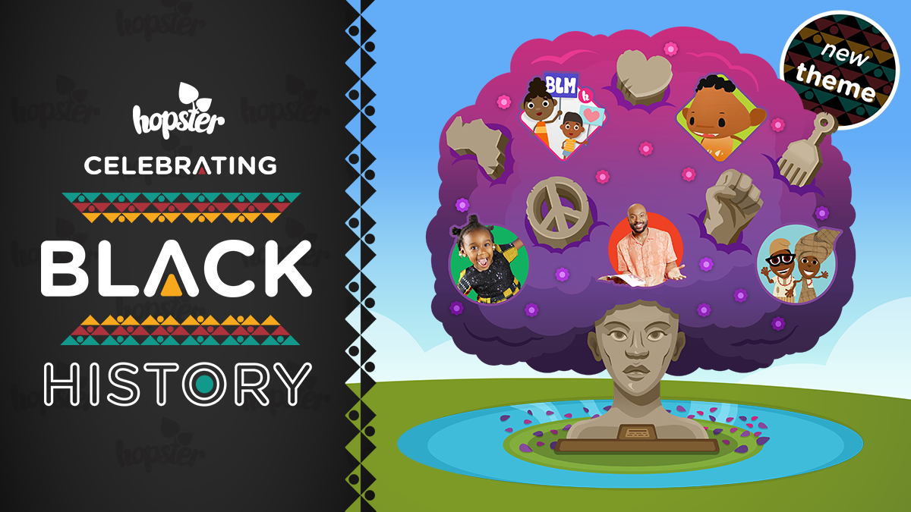

HOPSTER CREATES BLACK LIVES MATTER SONG FOR KIDS
ALL PROCEEDS TO GO TO THE BLACK CURRICULUM
1ST OCTOBER 2020: LAUNCHES BLACK HISTORY MONTH CONTENT

London, 23 September 2020 – Hopster, the BAFTA-nominated educational and entertainment digital platform that helps preschoolers learn through kids TV shows, music, games and books has released a brand new original Black Lives Matter Song for Kids as part of their Black history Month theme, launching on 1st October 2020.
The Black Lives Matter song for Kids is an animated video for children that speaks out against racism and all forms of social injustice. The song aims to raise awareness of the Black Lives Matter movement which seeks to end the systematic racism and inequality for black people across the world. The song is available to watch for free on Youtube and available for download on Spotify, Apple Music and more - all proceeds of the songs will be donated to The Black Curriculum a social enterprise that aims to combat the lack of Black history taught in the UK curriculum
Starting from 1st October, Hopster will be launching its Black History Month theme within its app featuring a slate of black-focused content such as African Nursery Rhymes, Kids Black History, Bino and Fino and Tata Storytime to support Black History Month. The theme and its content will be available globally except for US and Canada which celebrate the theme in February.
Miki Chojnacka co-CEO at Hopster said “We want to acknowledge and celebrate the positive contributions that black people have made to kids TV. The black community is hugely underrepresented in preschool TV, we want to change this. We want to challenge the negative stereotypes and emphasise the rich talent, culture and stories, instilling pride in our black community and to nurture inclusion in children of all races. Given the current media landscape and the Black Lives Matter movement happening globally, it has never been more timely to showcase our support in a meaningful way.”
Last year Hopster commissioned a diversity and inclusivity report ‘Is Kids TV Making Your Child Prejudice?’ which found that ethnic minorities were under-represented in kids tv. Only 12 % had BAME lead, around 50% of BAME characters appeared only in the background.
Black History Month Content
ALL CONTENT IS AVAILABLE IN OUR APP FROM 1ST OCTOBER
Watch Black Lives Matter Song for Kids HERE and our trailer BHM Trailer HERE
CLICK HERE FOR: IMAGES
General Hopster logo & images click HERE
- ENDS -
For more information please contact:
About Hopster – www.hopster.tv
Hopster is a beautifully designed app for the under-sixes, aiming to strike the perfect balance between learning and fun. For one low monthly subscription with no tie-ins, Hopster subscribers get access to a large selection of kid’s TV shows, stimulating learning games, nursery rhymes and music.
Hopster is trusted by millions of parents worldwide to keep their kids amazed with fun educational content in a safe and ad-free environment. It has topped the App Store charts in over 36 countries, was named Best Streaming Video Platform for preschoolers by Kidscreen as has received a channel nomination at the Children’s BAFTA in 2018 and 2019.
Hopster can be downloaded free from the App Store and Google Play and can be found on selected smart TVs such as Amazon Fire TV, EE TV and Roku in the UK, Roku Channels, Comcast Xfinity, DISH and Sling TV in the US and on many other platforms around the world.